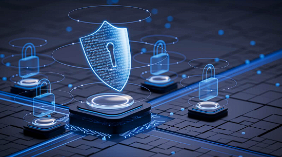

un mundo altamente digitalizado, la ciberseguridad se ha vuelto esencial para la seguridad nacional,
el desarrollo económico y la protección ciudadana. La dependencia de la tecnología trae beneficios, pero
también riesgos y amenazas sofisticadas.
Sector Publico
México reconoce la ciberseguridad como un tema complejo y global. Ha desarrollado un marco legal y políticas
nacionales, como la Estrategia Nacional de Ciberseguridad y la futura Ley Federal de Ciberseguridad,
para definir roles, fomentar cooperación y sancionar ciberdelitos. Se prioriza la protección de infraestructuras
críticas (energía, salud, finanzas, transporte) y la defensa nacional a través de SEDENA, SEMAR y la Guardia Nacional,
asegurando coordinación y respuesta ante incidentes. Además, se protege la información personal de los ciudadanos
mediante la Ley General de Protección de Datos y el trabajo del INAI.
Sector Privado
empresas gestionan gran parte de la infraestructura crítica y datos sensibles, por lo que deben adoptar un
gobierno corporativo de ciberseguridad. La cultura de seguridad permite gestionar riesgos, proteger activos,
prevenir espionaje y sabotaje, y asegurar la cadena de suministro. La planificación de respuesta a incidentes
y continuidad del negocio es clave, al igual que el cumplimiento de normas como la Ley Federal de Protección
de Datos Personales en Posesión de los Particulares.

Información General del Proyecto
Ciberseguridad
En un mundo completamente conectado y digitalizado, el funcionamiento de estructuras gubernamentales, económicas y sociales.
El mundo digital se ha convertido en un medio de vital importancia. La creciente dependencia de las tecnologías de la información
y la comunicación para la provisión de servicios esenciales ha traído consigo beneficios innegables, pero también ha expuesto
a las naciones a una nueva gama de riesgos y amenazas sofisticadas.
En este contexto, la ciberseguridad ha dejado de ser una preocupación solamente técnica para convertirse en una parte indispensable
de la seguridad nacional, el desarrollo económico y la protección ciudadana.
Este repositorio compila una serie de documentos digitales, páginas web, blogs y otros recursos los cuales fueron utilizados
como fuente de consulta para establecer los datos que en conjunto ofrecen una visión de los esfuerzos de México para construir
un ecosistema digital seguro y resiliente, y otras partes del mundo, analizando tanto la perspectiva del sector público como
las responsabilidades del sector privado. El repositorio documental aborda la ciberseguridad desde la política nacional hasta
el gobierno corporativo.
Información de los Creadores
Este proyecto fue desarrollado por el EQUIPO 1. ¡Esperamos que sea de utilidad para conocer acerca de ciberseguridad!
1.- Agencia de Seguridad de Infraestructura y Ciberseguridad. (2020, 21 de octubre). Critical Infrastructure Sectors.
https://www.cisa.gov/topics/critical-infrastructure-security-and-resilience/critical-infrastructure-sectors
2.- Australian Government. (2023). 2023–2030 Australian Cyber Security Strategy.
3.- Capa8. (2020, 10 de noviembre). A, B, C de la ciberseguridad en la protección de datos personales [Video].
YouTube. http://www.youtube.com/watch?v=yuPRMUAF1Sw
4.- Caro Bejarano, M. J. (2011, 27 de julio). La protección de las infraestructuras críticas.
Instituto Español de Estudios Estratégicos.
5.- Comisión Europea. (2020, 16 de diciembre). Nueva Estrategia de Ciberseguridad de la UE y nuevas normas para aumentar
la resiliencia de las entidades críticas físicas y digitales.
6.- de la Corte Ibáñez, L. (2017, 15 de junio). Capacidades ofensivas, disuasión y ciberdefensa. Real Instituto Elcano.
https://www.realinstitutoelcano.org/analisis/capacidades-ofensivas-disuasion-y-ciberdefensa
7.- EBL Consulting. (2025, 21 de abril). Nuevo régimen legal de protección de datos personales en México: implicaciones para
el sector público.
https://www.eblconsulting.mx/post/nuevo-regimen-legal-de-proteccion-de-datos-personales-en-mexico-implicaciones-para-el-sector-publico
8.- European Union Agency for Cybersecurity. (2023). ENISA Threat Landscape 2023. ENISA.
https://www.enisa.europa.eu/publications/enisa-threat-landscape-2023
9.- Fojón, E. (2022, 28 de septiembre). Ciberseguridad y guerra híbrida: La ampliación del espectro. Global Affairs -
Universidad de Navarra. https://www.unav.edu/web/global-affairs/ciberseguridad-y-guerra-hibrida-la-ampliacion-del-espectro
10.- Fuentes Rivera, S. (2024, 2 de mayo). Ley de Ciberseguridad en México: Conoce la nueva Ley. Delta Protect Blog.
https://www.deltaprotect.com/blog/ley-de-ciberseguridad-mexico
11.- Galán, C. M., & Galán Cordero, C. (2016). La ciberseguridad pública como garantía del ejercicio de derechos.
Derecho & Sociedad, (47), 293-306.
12.- Gobierno de España. (2021, 31 de diciembre). Estrategia de Seguridad Nacional. Ministerio de Defensa.
https://www.defensa.gob.es/defensa/politicadefensa/estrategiaseguridad
13.- Gobierno de México.(2017) Estrategia Nacional de Ciberseguridad.
15.- INCIBE. (s. f.). Guías y recursos. Portal de contenido para la ciudadanía.
https://www.incibe.es/hoyesunanuncio/guias-recursos
16.- INCIBE. (s. f.). Herramientas gratuitas. Sección de la Oficina de Seguridad del Internauta.
https://www.incibe.es/ciudadania/herramientas
17.- Instituto de Investigaciones Sociales UNAM. (2022, 18 de agosto). Marcos normativos de los delitos informáticos en México. Blog del IIS-UNAM. https://www.iis.unam.mx/blog/marcos-normativos-delitos-informaticos-mexico
18.- Instituto Federal de Telecomunicaciones. (s.f.). Ciberseguridad. https://ciberseguridad.ift.org.mx
19.- Instituto Nacional de Transparencia, Acceso a la Información y Protección de Datos Personales. (2018, junio). Recomendaciones para el Manejo de Incidentes de Seguridad de Datos Personales.
20.- Kcho-26. (2024, 12 de enero). Ciberseguridad Gubernamental: Protección de Datos y Ciudadanos [Video]. YouTube. http://www.youtube.com/watch?v=1sMy_7McMXo
21.- KIO. (2023, 11 de julio). La importancia de la ciberseguridad y la ciberdefensa para los países.https://www.kio.tech/articulos/cybersecurity/la-importancia-de-la-ciberseguridad-y-la-ciberdefensa-para-los-paises
22.- Knowmad Mood. (2023, 13 de junio). Zero Trust y la ciberseguridad en OT para infraestructuras críticas. Knowmad Mood Blog.https://www.knowmadmood.com/es/blog/zero-trust-ciberseguridad-ot-infraestructuras-criticas
23.- La Moncloa. (2025, 14 de enero). El Gobierno presenta la futura Ley de Coordinación y Gobernanza de la Ciberseguridad. https://www.lamoncloa.gob.es/consejodeministros/resumenes/paginas/2025/140125-rueda-de-prensa-ministos.aspx
24.- LISA Institute. (2022, 4 de agosto). Infraestructuras Críticas: qué son, clasificación y legislación. Blog de LISA Institute.https://www.lisainstitute.com/blogs/blog/infraestructuras-criticas
25.- López Casarín, J. J. (2023, 25 de abril). Iniciativa con proyecto de decreto por el que se expide la Ley Federal de Ciberseguridad. Gaceta Parlamentaria, Cámara de Diputados.
26.- Lozano Miralles, J., & Carazo Liébana, M. J. (Eds.). (2024). Ámbitos de la Seguridad Nacional: Protección de Infraestructuras Críticas (Códigos electrónicos). Boletín Oficial del Estado.
27.- Metafrase. (2024, 15 de mayo). Ciberdefensa: ¿Qué es y cuál es su importancia?. Metafrase Blog. https://www.metafrase.com/blog/ciberdefensa
28.- Microsoft. (2023). Microsoft Digital Defense Report 2023. Microsoft Corporation. https://www.microsoft.com/en-us/security/security-insider/microsoft-digital-defense-report-2023
29.- Ministerio de Tecnologías de la Información y las Comunicaciones. (2025, 21 de abril). Lineamiento para la identificación de las infraestructuras críticas cibernéticas.
30.- NTT DATA. (2022, 15 de septiembre). Ciberseguridad en el sector público: responsabilidad crítica de los gobiernos. https://uy.nttdata.com/insights/blog/ciberseguridad-en-el-sector-publico-responsabilidad-critica-de-los-gobiernos
31.- Red de Expertos de CEDIA. (2024, mayo). Innovando en el sector de la ciberseguridad: Estudio de vigilancia tecnológica e inteligencia competitiva. CEDIA.
32.- Ríos, A. (s.f.). Marco normativo para la ciberseguridad en México. Derecho en México. https://derechoenmexico.mx/analisis/marco-normativo-ciberseguridad-mexico.pdf
33.- Riquelme, R. (2025, 29 de septiembre). Industria, academia y autoridades urgen a emitir ley de ciberseguridad en México. El Economista. https://www.eleconomista.com.mx/politica/industria-academia-autoridades-urgen-emitir-ley-ciberseguridad-mexico-20250929-779185.html
34.- Rodríguez Bribiesca, A. (2023, 24 de marzo). Ley sobre ciberseguridad en México: un reto pendiente. Hechos y Derechos. https://revistas.juridicas.unam.mx/index.php/hechos-y-derechos/article/view/17975/18293
35.- Sánchez, I. (2024, 12 de marzo). El avance de la ciberseguridad: un modelo de éxito y sus retos pendientes. FIT Learning Solutions. https://fitls.com/el-avance-de-la-ciberseguridad-un-modelo-de-exito-y-sus-retos-pendientes
36.- Secretaría de la Defensa Nacional. (s.f.). Desarrollo de la Ciberdefensa y Ciberseguridad en la Secretaría de la Defensa Nacional (MD-20).
37.- Secretaría de la Defensa Nacional. (2023, 23 de noviembre). Equipo de Respuesta a Incidentes Cibernéticos (CERT-SEDENA). gob.mx. https://www.gob.mx/defensa/articulos/equipo-de-respuesta-a-incidentes-ciberneticos-sedena-354440
38.- Secretaría de Marina. (2021, mayo). Estrategia Institucional para el Ciberespacio 2021-2024.
39.- Secretaría de Seguridad y Protección Ciudadana. (s.f.). Tema: Ciberseguridad. Gobierno de México. https://www.gob.mx/sspc/documentos/tema-ciberseguridad
40.- Secretaría de Seguridad y Protección Ciudadana, Guardia Nacional. (2021, octubre). Protocolo Nacional Homologado de Gestión de Incidentes Cibernéticos.
41.- Senado de la República. (2023, 8 de febrero). Expedir Ley Federal de Ciberseguridad, plantean en el Senado de la República. Coordinación de Comunicación Social. http://comunicacionsocial.senado.gob.mx/informacion/comunicados/8145-expedir-ley-federal-de-ciberseguridad-plantean-en-el-senado-de-la-republica
42.- Tec de Monterrey. (2022, 10 de enero). Cómo prevenir ataques cibernéticos en el sector público [Video]. YouTube. https://youtu.be/mGTwz1wKj5A
43.- Telefónica Tech. (2023, 15 de junio). 4 desafíos de ciberseguridad en las instituciones publicas [Video]. YouTube. https://youtu.be/GNzUOZsM1Bw
44.- Valdez-Rivera, D. G., & Chimal-Eguía, J. C. (2018). Impacto de la ciberseguridad en el sector público mexicano. Compendio de Casos de Administración, 3(1). https://revistas.unam.mx/index.php/compendio/article/view/45930
45.- WeLiveSecurity. (s.f.). WeLiveSecurity en Español. https://www.welivesecurity.com/es
1.- Carvajal Bernal, M. (2025). Guía para la adopción de una cultura de ciberseguridad en juntas directivas. En M. E. Realpe Díaz & G. A. Gómez Rodríguez (Eds.), Ciberseguridad en la Frontera Digital: desafíos y oportunidades en los nuevos ecosistemas tecnológicos empresariales (pp. 157-196). Sello Editorial ESDEG.
2.- ClarkeModet. (2022, 17 de julio). Aspecto: Iniciativas de sensibilización del sector privado [Video]. YouTube. https://www.youtube.com/watch?v=9AL64d54trk
3.- Club CISO. (2023, 25 de octubre). El papel transformador del CISO. https://club-ciso.aec.es/el-papel-transformador-del-ciso
4.- Congreso de la Unión. (2021, 20 de mayo). Ley Federal de Protección de Datos Personales en Posesión de los Particulares. Diario Oficial de la Federación.
5.- Conseg Seguridad Privada. (s. f.). La seguridad privada como parte de la cadena de suministro, clave en su buen funcionamiento. Recuperado el 15 de octubre de 2025, de https://conseg.com.mx/la-seguridad-privada-como-parte-de-la-cadena-de-suministro-clave-en-su-buen-funcionamiento/
6.- CSIRT CEDIA. (2023, 8 de junio). Podcast | Seguridad informática conjunta entre el sector privado y el Estado [Video]. YouTube. https://youtu.be/0L3Y1COn8Vg
7.- Digetech. (s. f.). La Continuidad del Negocio como Pilar Estratégico de la Ciberseguridad. https://spanish.digetech.net/la-continuidad-del-negocio-como-pilar-estrategico-de-la-ciberseguridad/
8.- Dirección Nacional de Ciberseguridad de Israel. (2022). Gestión de riesgos cibernéticos en entornos de tecnologías operativas (OT): Guía para Juntas Directivas. Banco Interamericano de Desarrollo.
9.- DNV. (s.f.). Certificación ISO/IEC 27001: Sistema de gestión de seguridad de la información. https://www.dnv.com.mx/services/iso-27001-sistema-de-gestion-de-seguridad-de-la-informacion-3327
10.- EALDE Business School. (2021, 10 de junio). Integración de la ciberseguridad en la continuidad de negocio. https://www.ealde.es/ciberseguridad-en-continuidad-de-negocio/
11.- EBL Consulting. (2025, 21 de abril). Protección de datos personales en el sector privado en México: obligaciones reforzadas bajo el nuevo marco legal. https://www.eblconsulting.mx/post/proteccion-de-datos-personales-en-el-sector-privado-en-mexico-obligaciones-reforzadas-bajo-el-nuevo-marco-legal
12.- European Union Agency for Cybersecurity. (2021, febrero). Good Practices for Supply Chain Cybersecurity. ENISA. https://www.enisa.europa.eu/publications/good-practices-for-supply-chain-cybersecurity
13.- GlobalSuite Solutions. (s.f.). Guía para la gestión de ciberseguridad en la cadena de suministro. https://www.globalsuitesolutions.com/es/ciberseguridad-cadena-de-suministro-herramientas-clave/
14.- González Martínez, J. (2018). Marco jurídico de la ciberseguridad en México [Tesis de maestría, Universidad Nacional Autónoma de México]. Repositorio de la UNAM.
15.- Harvard Deusto. (2022, 18 de julio). Un CISO no basta para solventar las carencias del consejo de administración en ciberseguridad. https://www.harvard-deusto.com/un-ciso-no-basta-para-solventar-las-carencias-del-consejo-de-administracion-en-ciberseguridad
16.- HPE. (s.f.). ¿Qué es la seguridad de la cadena de suministro?. https://www.hpe.com/mx/es/what-is/supply-chain-security.html
17.- Ibero Online. (2024, 25 de enero). Gobierno Corporativo: la Ciberseguridad como un desafío de negocio. Diplomados Ibero Blog. https://www.diplomados-ibero-blog.com.mx/l/gobierno-corporativo-la-ciberseguridad-como-un-desafio-de-negocio
18.- iCubo. (2023, 10 de agosto). Explorando la ética empresarial en la era de la analítica de datos. iCubo Solutions Blog. https://www.icubosolutions.com/blog/etica-empresarial-en-la-era-de-la-analitica-de-datos
19.- Imperia. (s.f.). Guía práctica sobre ciberseguridad en la cadena de suministro con casos y soluciones SaaS. https://imperiascm.com/es-es/blog/ciberseguridad-cadena-de-suministro
20.- INCIBE-CERT. (2020). Guía de gestión de ciberincidentes para el sector privado. Instituto Nacional de Ciberseguridad de España.
21.- INCIBE Empresas. (s. f.). TemáTICas Gestión de incidentes de seguridad. INCIBE. https://www.incibe.es/empresas/tematicas/gestion-incidentes-seguridad
22.- Instituto Federal de Telecomunicaciones. (s.f.). Percepción y conocimiento de las personas usuarias de los servicios de telecomunicaciones en materia de ciberseguridad en plataformas digitales para compras y banca en línea, redes sociales, correo electrónico y servicio de almacenamiento en la nube.
23.- ISMS Forum. (2023). Guía para la gestión de la ciberseguridad en entornos industriales y cadenas de suministro. https://www.ismsforum.es/ficheros/descargas/guia-entornos-industriales-20231686772410.pdf
24.- Izertis. (s.f.). Gestión de riesgos de seguridad de la información en la cadena de suministro. https://www.izertis.com/es/-/blog/gestion-riesgos-cadena-suministro
25.- Junta Común de Inspección de las Naciones Unidas. (2021). Examen de la gestión de la ciberseguridad en las organizaciones del sistema de las Naciones Unidas (JIU/REP/2021/3).
26.- Microsoft News Center Latinoamérica. (2022, 15 de marzo). Trabajar con un comité de ciberseguridad de la junta directiva. Microsoft News. https://news.microsoft.com/source/latam/noticias-de-microsoft/trabajar-con-un-comite-de-ciberseguridad-de-la-junta-directiva
27.- Microsoft Security. (s. f.). ¿Qué es la respuesta a incidentes? Plan y pasos. Microsoft. https://www.microsoft.com/es-mx/security/business/security-101/what-is-incident-response
28.- Oficina de Publicaciones de la Unión Europea. (2019). La seguridad de la cadena de suministro de las TIC: Retos y posibles soluciones.
29.- Organización de los Estados Americanos. (2020). Derechos de Propiedad Intelectual.
30.- Organización de los Estados Americanos y OEA-CICTE. (2018). Guía de Gestión de Crisis Cibernéticas.
31.- Organización Mundial de la Propiedad Intelectual. (s.f.). ¿Qué es la propiedad intelectual?. https://www.wipo.int/es/web/about-ip
32.- Presidencia de la República de Colombia. (2022). Vigilancia Tecnológica en Ciberseguridad (Boletín No. 1).
33.- Proofpoint. (s.f.). Director de seguridad de la información (CISO). https://www.proofpoint.com/es/threat-reference/chief-information-security-officer-ciso
34.- Quiñonez, J. (2024, 25 de marzo). Tendencias en ciberseguridad que revolucionarán el 2024. A3Sec. https://a3sec.com/blog/tendencias-ciberseguridad-2024
35.- Red Hat. (s.f.). La seguridad de la cadena de suministro de software. https://www.redhat.com/es/topics/security/what-is-software-supply-chain-security
36.- Secretaría de Economía. (2019, 27 de marzo). La propiedad industrial en México. gob.mx. https://www.gob.mx/se/articulos/la-propiedad-industrial-en-mexico-196503
37.- Secretaría de Seguridad Pública. (2010). Manual básico de seguridad de la información.
38.- Silicon Valley Bank. (2022, 23 de septiembre). Protección de la propiedad intelectual: lo que todo fundador de una startup necesita saber. https://www-svb-com.translate.goog/startup-insights/startup-strategy/protecting-intellectual-property-startups/
39.- Stine, K., Pascoe, C., Harris, A. W., III, Schultz, C. T., y Witte, G. (2024, 26 de febrero). El Marco de Ciberseguridad del NIST (CSF) 2.0 (NIST CSWP 29). National Institute of Standards and Technology.
40.- U.S. Department of Energy. (2022, 1 de noviembre). Supply Chain Cybersecurity Principles. https://www.energy.gov/ceser/supply-chain-cybersecurity-principles
41.- Universidad Pontificia Comillas. (2023, 14 de junio). La ciberseguridad, clave para el gobierno corporativo. https://www.comillas.edu/noticias/la-ciberseguridad-clave-para-el-gobierno-corporativo
42.- Zapata, J. (2023, 20 de julio). Ciberseguridad en cadenas de suministros inteligentes y resilientes en América Latina. Repositorio CEPAL.https://repositorio.cepal.org/server/api/core/bitstreams/2b53c8ee-380e-47de-b115-298e8e06eeaa/content
México reconociendo la ciberseguridad como un tema complejo y de naturaleza global, ha establecido una base estratégica para mejorar
sus defensas. El primer paso de este esfuerzo es la consolidación de un marco legal y de políticas nacionales, como se refleja en
la Estrategia Nacional de Ciberseguridad y en la iniciativa para una Ley Federal de Ciberseguridad. Estos documentos establecen
la necesidad de un gobierno claro que defina roles, fomente la cooperación y establezca una base jurídica para la prevención y
sanción de ciberdelitos.
Un componente crucial de la estrategia estatal es la protección de infraestructuras críticas, aquellas
plataformas y sistemas cuyos funcionamientos son indispensables para la sociedad dado el tipo de servicios que ofrecen tienen
un rol importante en el funcionamiento del país. El análisis comparado con marcos internacionales como los de España, Colombia
y la Unión Europea, demuestra un consenso global sobre la necesidad de identificar y proteger sectores como el orden público,
la energía, las finanzas, la salud y el transporte contra ataques que podrían tener consecuencias devastadoras.
El sector privado, como gestor de una gran parte de la infraestructura crítica y depositario de enormes volúmenes de datos,
tiene un rol fundamental y responsable. Un buen gobierno corporativo de la ciberseguridad, liderado desde las juntas directivas,
es esencial para hacer evolucionar la visión de que la seguridad es un problema meramente técnico. La adopción de una cultura
de ciberseguridad permite a las empresas gestionar los riesgos, reconociendo al factor humano no como el más débil, sino como
un elemento clave en la defensa.
La protección de los activos más valiosos de una empresa es una prioridad estratégica. En un entorno donde las amenazas evolucionan
constantemente, las organizaciones deben implementar estrategias más robustas, basados en estándares internacionales, para
prevenir la filtración de información, el espionaje corporativo y el sabotaje, garantizando así su competitividad e innovación.
**Contexto:**En el pdf “La Estrategia Nacional de Ciberseguridad de México (2017)” es el marco de acción del
gobierno para proteger el ciberespacio nacional. Su objetivo central es fortalecer la ciberseguridadmediante la promoción de
un uso responsable de las TIC, la gestión de riesgos digitales y la protección de la sociedad, la economía y las instituciones
públicas frente a ciberamenazas y ciberdelitos. Se implementa a través de una coordinación multiactor y con un enfoque en
derechos humanos.
**Contexto:**Este documento, emitido por el Ministerio de Tecnologías de la Información y las Comunicaciones
(MinTIC) de Colombia, constituye una guía oficial para identificar y clasificar las Infraestructuras Críticas Cibernéticas
(ICC) del país. Su objetivo central es proteger sistemas esenciales —como los sectores de energía, agua, salud, transporte
finanzas— de ciberamenazas y otros riesgos, cuya interrupción podría tener un impacto grave en la seguridad nacional,
la economía y el bienestar de los ciudadanos. La guía detalla una metodología con cinco variables de evaluación y establece
los roles y responsabilidades para garantizar la ciberseguridad y resiliencia de estos servicios vitales.
**Contexto:**Este documento establece el Protocolo Nacional Homologado de Gestión de Incidentes
Cibernéticos de México, un marco operativo para la coordinación de los "Múltiples Involucrados" dependencias federales,
entidades federativas, sector privado y academia— en la preparación, detección, respuesta y recuperación ante incidentes
cibernéticos que afecten a los activos esenciales de información. El protocolo, basado en estándares internacionales como
el Marco NIST y las mejores prácticas de ENISA, designa al CERT-MX de la Guardia Nacional como el centro coordinador único,
encargado de recibir reportes, emitir alertas y brindar asistencia técnica. Su objetivo fundamental es fortalecer la
ciberseguridad nacional mediante un enfoque unificado y coordinado para gestionar y mitigar los riesgos cibernéticos de mayor
criticidad e impacto.
**Contexto: Este documento es el texto oficial de la Ley General de Protección de Datos Personales
en Posesión de Sujetos Obligados (LGPDPPSO), expedida por el Congreso de la Unión y publicada en el Diario Oficial
de la Federación el 20 de marzo de 2025. Su objetivo principal es establecer las bases y principios para garantizar
el derecho a la protección de datos personales en posesión de cualquier autoridad, entidad u organismo de los poderes
Ejecutivo, Legislativo y Judicial, órganos autónomos, partidos políticos y otros sujetos obligados. La ley detalla los
principios (licitud, finalidad, consentimiento, calidad), los deberes de seguridad del responsable, los derechos ARCO
de los titulares, el régimen de transferencias y las sanciones aplicables.
**Contexto: Este documento es la undécima edición del informe "ENISA Threat Landscape (ETL)",
publicado por la Agencia de la Unión Europea para la Ciberseguridad (ENISA) en octubre de 2023. Cubre el periodo
de julio de 2022 a junio de 2023. Su objetivo principal es proporcionar información sobre las amenazas de ciberseguridad
emergentes, las actividades de los actores de amenazas, las vulnerabilidades y los incidentes, principalmente dentro
de la Unión Europea, para informar decisiones y prioridades en el campo de la ciberseguridad. El informe identifica
y analiza las principales amenazas (Ransomware, Malware, Ingeniería Social, Amenazas contra Datos, DDoS, Amenazas
de Internet, Manipulación de Información, Ataques a la Cadena de Suministro), las tendencias de los actores de amenazas
(grupos estatales, cibercriminales, hackers a sueldo, hacktivistas), el panorama de vulnerabilidades (CVEs), realiza
análisis sectoriales y evalúa impactos y motivaciones.**
**Contexto: El documento "Guía para la adopción de una cultura de ciberseguridad en juntas directivas" (2025),
presenta una guía práctica dirigida a juntas directivas para liderar la adopción de una cultura corporativa de ciberseguridad.
Dice que la ciberseguridad es una responsabilidad estratégica que debe comenzar en el más alto nivel, utilizando el elemento humano
como una solución en lugar de solo un problema.**
**Contexto: El "Capítulo 20: Derechos de Propiedad Intelectual" (2020) del T-MEC establece
las obligaciones para la protección y observancia adecuada y efectiva de los derechos de propiedad intelectual (DPI)
entre las Partes. Define términos clave y reafirma compromisos con acuerdos internacionales. Detalla principios como
la protección de la salud pública y aborda la cooperación, transparencia, y trato nacional. Incluye secciones específicas
sobre: Marcas, Patentes y protección de datos para Productos Químicos Agrícolas y Farmacéuticos/Biológicos, Diseños Industriales,
Derecho de Autor y Derechos Conexos, Secretos Industriales y Observancia**
**Contexto:El documento "INNOVACIÓN EN CIBERSEGURIDAD. ESTRATEGIA Y TENDENCIAS" (2019)
de Juan González Martínez aborda la transformación digital masiva en los sectores público y privado y
el consecuente aumento de los riesgos de ciberseguridad. Se argumenta que la innovación en ciberseguridad
es un elemento habilitador crucial para adoptar nuevas tecnologías de manera segura, dada la evolución
constante de las amenazas y la mayor superficie de ataque. Finalmente, identifica y discute tendencias
tecnológicas clave en ciberseguridad: Inteligencia Artificial , Criptografía, Biometría, Privacidad,
seguridad en Internet of Things (IoT) y Blockchain.**
**Contexto: En la "Guía de gestión de crisis de ciberseguridad en empresas" (2023),
INCIBE-CERT proporciona un procedimiento detallado para que el sector privado (específicamente medianas empresas)
y la ciudadanía gestionen ciberincidentes y crisis. También incluye una sección específica para la gestión de crisis
originadas en la cadena de suministro (proveedores) y anexos con niveles de peligrosidad e impacto.**
**Contexto: En el documento "Ley Federal de Protección de Datos Personales en Posesión
de los Particulares" (2025), la Cámara de Diputados expide la ley que regula la protección de datos en
manos de particulares en México. Su objetivo es garantizar la privacidad y el derecho a la autodeterminación
informativa de las personas. La ley se basa en los principios de licitud, consentimiento, información, calidad,
finalidad, lealtad, proporcionalidad y responsabilidad. Establece definiciones clave, incluyendo "datos personales sensibles" ,
y los requisitos del Aviso de Privacidad.**